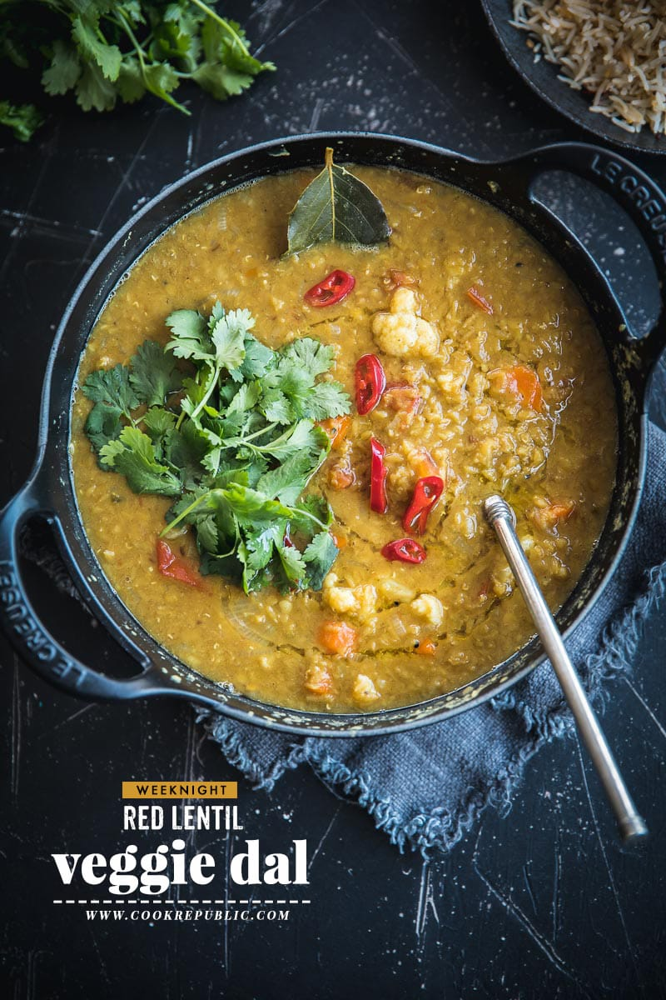

Red lentil and veggie dhal

Description
From Cook Republic is this wholesome red lentil and veggie dhal. Easy enough to make on a weeknight.
Ingredients
- 1 tablespoon EV olive oil
- 1 teaspoon cumin seeds
- 1/2 teaspoon nigella seeds
- 1 bay leaf
- 3 large garlic cloves, minced
- 2 shallots, thinly sliced
- 1/2 long green chilli, deseeded and finely chopped
- 2 small carrots, diced
- 1 1/2 cups (300g) red lentils, washed and drained
- 1 teaspoon ground turmeric
- 1 teaspoon garam masala
- 1 tablespoon ground cumin
- 6 cups waters
- 2 teaspoons sea salt flakes
- 1 cup (120g) cauliflower florets
- 1 large tomato, chopped
- fresh coriander leaves, to serve
- extra chilli slices, to serve
Instructions
- Heat oil on high in a heavy bottomed cooking pot (saucepan or stock pot).
- Add cumin seeds, nigells seeds, bay leaf, garlic, shallots and chilli. Saute for 2-3 minutes until shallots start to glaze.
- Add carrots and lentils. Reduce heat to medium and saute for another 2-3 minutes until lentils are glazed. Add turmeric, garam masala and cumin. Saute for a few seconds until the spices are fragrant.
- Add water and salt. Mix well. Increase heat to high and gring to a boil (approx. 2-3 minutes). Reduce heat to medium and cook uncovered for 15 minutes until the lentils are almost cooked. Add cauliflower and tomato. Mix well. Check to see if more water is required and add half a cup if necessary.
- Cook for 10-12 minutes until cauliflower is al dente.
- Remove from heat. Check for seasoning. Garnish with coriander and chilli. Serve hot with steamed rice or rotis.
Return to home